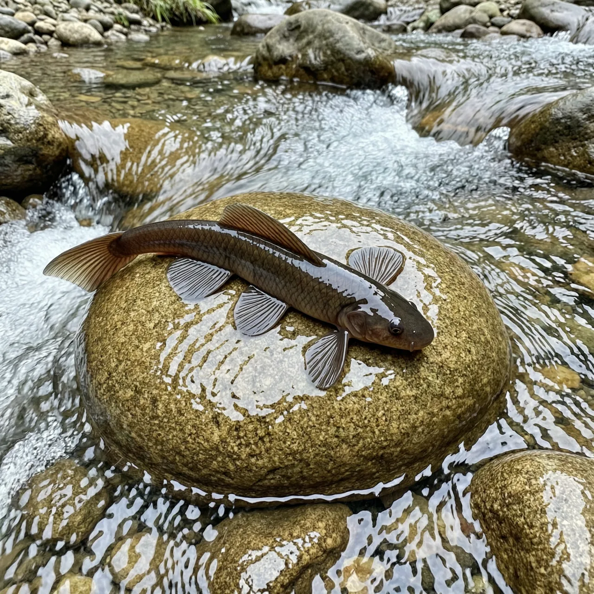
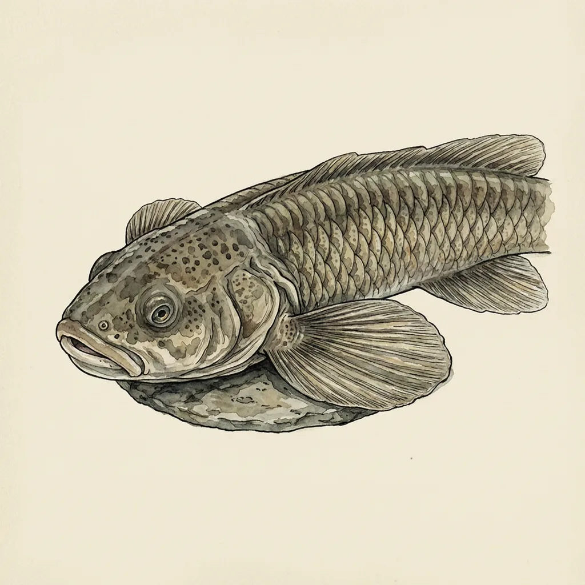

大鳍间吸鳅是东洋界山溪急流中的特化鱼类，胸鳍与腹鳍横向扩展、在腹面连成一只吸盘，使它得以平贴在急流冲刷的石面上。这个物种直到1982年才被命名描述，中文名与学名都把重点落在那对夸张的大鳍上——本来用来游泳的部件，被改成了固定自身的装备。
湍急的山溪里，一块被水冲得发亮的石头上，常趴着一条看上去并不在游泳的鱼——大鳍间吸鳅。它是山溪急流的特化种，生活在东洋界一带水流湍急的溪段，贴着溪底的石块度日。急流对这个物种来说不是障碍，而是它选择的住处：别的鱼设法躲开水流，大鳍间吸鳅的身体则整个长成抵住水流的样子。
大鳍间吸鳅的胸鳍与腹鳍横向扩展，向身体两侧摊开，腹面连成一片，构成一只吸盘。水流从上游压过来时，这只吸盘把整条鱼固定在石面上，不让它被水推着走。与同科近亲相比，差别也在这双鳍上：大鳍间吸鳅的鳍扩得更开，吸盘几乎由胸腹两对鳍连成一个整面，贴着石头时身体压得极低。
反直觉的地方在于，这只吸盘并不是一个专门的吸附器官，而是游泳用的胸鳍和腹鳍改的——同一套部件换了职业。它的种加词 macroptera 与中文名里的「大鳍」说的都是这双摊开的鳍，命名者几乎把整个名字押在了这对手艺上。这个物种直到 1982 年才由 Zheng 描述发表，此前一直藏在山溪的石头底下。
